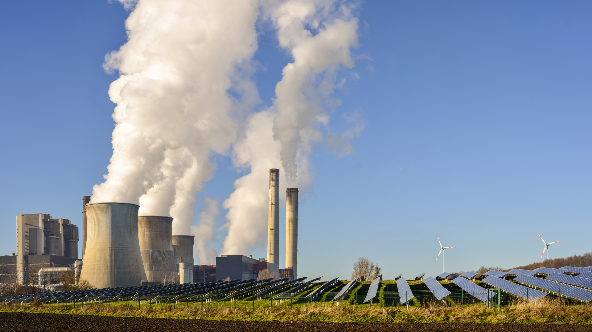

Zöldenergia célja
- A szén-dioxid-kibocsátás csökkentése
- Az emberi tevékenység környezetre gyakorolt negatív hatásainak mérséklése
- A természeti erőforrások megőrzése

Mi a zöldenergia
- A zöldenergia hozhatja el az igazán tiszta környezetet és a klímasemleges gazdaságot.
- Ha a mindennapi élethez szükséges energiát megújuló, tiszta erőforrásokból fedezzük, akkor nem lesz szükség szénhidrogének elégetésére.

Mi akadályozza a zöld energiát
- Nincs meg rá a politikai szándék vagy hiányoznak a tárgyi feltételek.
- Gazdaságossági (megtérülési) vagy környezetvédelmi okok is akadályozhatják.
- Kevés napsütéses területen nincs értelme beruházni, mert nem lenne hatékony.

Miért fontos a zöldenergia ismerete, használata
- A zöldenergia a fejlett gazdaságok szerves részévé vált, bár kevésbé látványos.
- A fosszilis energiahordozók elégetése szennyezi a levegőt és károsítja a földet.
- Előnyük viszont, hogy olcsók és könnyen elérhetők, és szabályozható az energiatermelésük.